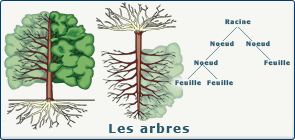
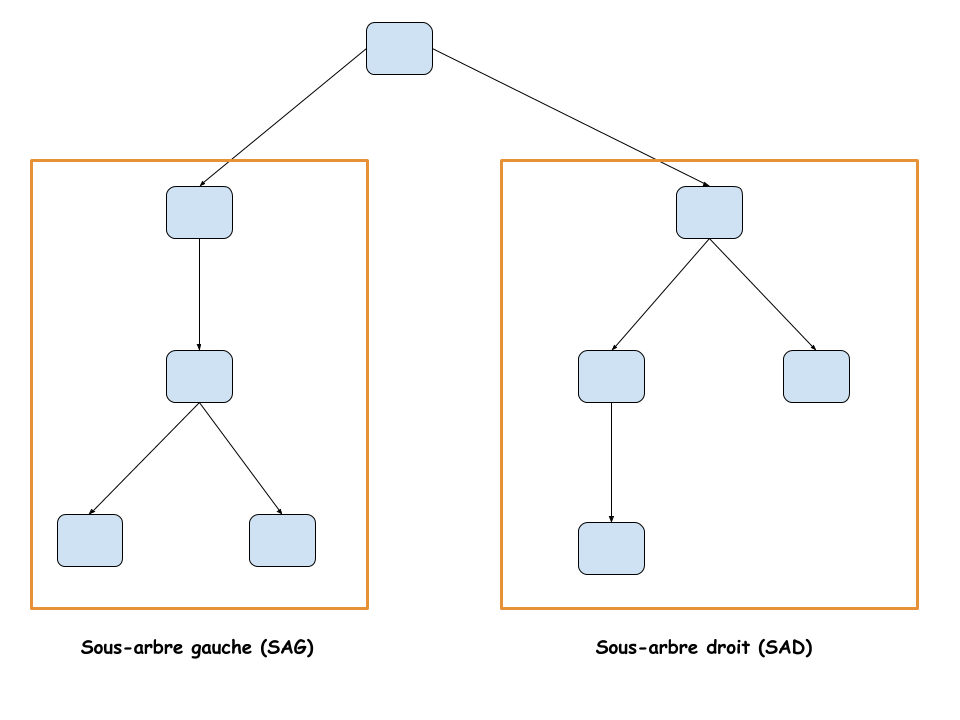

Arbres binaires
Les piles, les files et les listes sont des structures linéaires. Les données y sont rangés selon un ordre précis. Il existe cependant d'autres structures qui ne sont pas linéaires. C'est le cas des graphes qui seront étudiés plus tard et en particulier des structures arborescentes : les arbres.
Notion d'arbre
Un arbre est un nœud possédant éventuellement un ou plusieurs enfants qui sont eux même des nœud possédant éventuellement un ou plusieurs enfants. Chaque nœud (sauf celui de départ) ne possédant qu'un seul nœud parent. 
Exemples :
- Les listes simplement chaînées sont des exemples d'arbre très simple où les nœuds (sauf le dernier) ne possède qu'un seul enfant.
- Les dossiers et les fichiers sur un disque dur forment un arbre.

Vocabulaire :
- Un arbre est hiérarchisé, à partir du seul nœud qui n'a pas de parent : sa racine.
- Les nœuds qui n'ont pas d'enfants sont des feuilles.
- Les chemins partant de la racine à l'une des feuilles est un branches.
- La taille d'un arbre est égal au nombre de nœuds (racine et feuilles comprises).
- La hauteur d'un arbre est égale à la longueur de la plus grande branche.

- Quelle est la racine de cet arbre ?
- Quelles sont les feuilles de cet arbre ?
- Quelles est la hauteur de cet arbre ?
- Quelles est la taille de cet arbre ?
Arbres binaires
Nous allons maintenant nous concentrer sur les arbres binaires : un arbre dont les nœuds ont uniquement 0, 1 ou 2 enfants. On appelle alors ces enfants fils droit et fils gauche ou encore sous arbre droit et sous arbre gauche. 
- Quelle est la racine de cet arbre ?
- Quelles sont les feuilles de cet arbre ?
- Quelles est la hauteur de cet arbre ?
- Quelles est la taille de cet arbre ?
- Quel est le sous arbre droit du nœud B ?
- Quel est le sous arbre gauche du nœud I ?
- Quel est le sous arbre gauche du nœud G ?